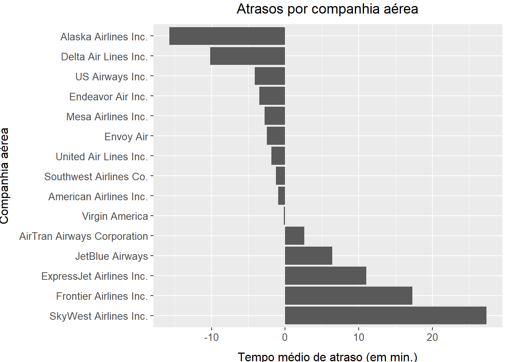

Capítulo 3 Transformação de dados com dplyr
Para este capítulo, necessitaremos das seguintes configurações iniciais:
3.3 Comparações
Exercício 3.3.1
Encontre todos os voos que:
- Tiveram um atraso de duas horas ou mais na chegada.
- Foram para Houston (IAH ou HOU).
- Foram operados pela United, American ou Delta.
- Partiram em julho, agosto e setembro.
- Chegaram com mais de duas horas de atraso, mas não saíram atrasados.
- Atrasaram pelo menos uma hora, mas compensaram mais de 30 minutos durante o trajeto.
- Saíram entre meia-noite e 6h (incluindo esses horários).
Solução.
- Tiveram um atraso de duas horas ou mais na chegada.
## # A tibble: 10,200 × 19
## year month day dep_time sched_dep_time dep_delay arr_time sched_arr_time
## <int> <int> <int> <int> <int> <dbl> <int> <int>
## 1 2013 1 1 811 630 101 1047 830
## 2 2013 1 1 848 1835 853 1001 1950
## 3 2013 1 1 957 733 144 1056 853
## 4 2013 1 1 1114 900 134 1447 1222
## 5 2013 1 1 1505 1310 115 1638 1431
## 6 2013 1 1 1525 1340 105 1831 1626
## 7 2013 1 1 1549 1445 64 1912 1656
## 8 2013 1 1 1558 1359 119 1718 1515
## 9 2013 1 1 1732 1630 62 2028 1825
## 10 2013 1 1 1803 1620 103 2008 1750
## # ℹ 10,190 more rows
## # ℹ 11 more variables: arr_delay <dbl>, carrier <chr>, flight <int>,
## # tailnum <chr>, origin <chr>, dest <chr>, air_time <dbl>, distance <dbl>,
## # hour <dbl>, minute <dbl>, time_hour <dttm>- Foram para Houston (IAH ou HOU).
## # A tibble: 9,313 × 19
## year month day dep_time sched_dep_time dep_delay arr_time sched_arr_time
## <int> <int> <int> <int> <int> <dbl> <int> <int>
## 1 2013 1 1 517 515 2 830 819
## 2 2013 1 1 533 529 4 850 830
## 3 2013 1 1 623 627 -4 933 932
## 4 2013 1 1 728 732 -4 1041 1038
## 5 2013 1 1 739 739 0 1104 1038
## 6 2013 1 1 908 908 0 1228 1219
## 7 2013 1 1 1028 1026 2 1350 1339
## 8 2013 1 1 1044 1045 -1 1352 1351
## 9 2013 1 1 1114 900 134 1447 1222
## 10 2013 1 1 1205 1200 5 1503 1505
## # ℹ 9,303 more rows
## # ℹ 11 more variables: arr_delay <dbl>, carrier <chr>, flight <int>,
## # tailnum <chr>, origin <chr>, dest <chr>, air_time <dbl>, distance <dbl>,
## # hour <dbl>, minute <dbl>, time_hour <dttm>- Foram operados pela United, American ou Delta.
## # A tibble: 139,504 × 19
## year month day dep_time sched_dep_time dep_delay arr_time sched_arr_time
## <int> <int> <int> <int> <int> <dbl> <int> <int>
## 1 2013 1 1 517 515 2 830 819
## 2 2013 1 1 533 529 4 850 830
## 3 2013 1 1 542 540 2 923 850
## 4 2013 1 1 554 600 -6 812 837
## 5 2013 1 1 554 558 -4 740 728
## 6 2013 1 1 558 600 -2 753 745
## 7 2013 1 1 558 600 -2 924 917
## 8 2013 1 1 558 600 -2 923 937
## 9 2013 1 1 559 600 -1 941 910
## 10 2013 1 1 559 600 -1 854 902
## # ℹ 139,494 more rows
## # ℹ 11 more variables: arr_delay <dbl>, carrier <chr>, flight <int>,
## # tailnum <chr>, origin <chr>, dest <chr>, air_time <dbl>, distance <dbl>,
## # hour <dbl>, minute <dbl>, time_hour <dttm>- Partiram em julho, agosto e setembro.
## # A tibble: 86,326 × 19
## year month day dep_time sched_dep_time dep_delay arr_time sched_arr_time
## <int> <int> <int> <int> <int> <dbl> <int> <int>
## 1 2013 7 1 1 2029 212 236 2359
## 2 2013 7 1 2 2359 3 344 344
## 3 2013 7 1 29 2245 104 151 1
## 4 2013 7 1 43 2130 193 322 14
## 5 2013 7 1 44 2150 174 300 100
## 6 2013 7 1 46 2051 235 304 2358
## 7 2013 7 1 48 2001 287 308 2305
## 8 2013 7 1 58 2155 183 335 43
## 9 2013 7 1 100 2146 194 327 30
## 10 2013 7 1 100 2245 135 337 135
## # ℹ 86,316 more rows
## # ℹ 11 more variables: arr_delay <dbl>, carrier <chr>, flight <int>,
## # tailnum <chr>, origin <chr>, dest <chr>, air_time <dbl>, distance <dbl>,
## # hour <dbl>, minute <dbl>, time_hour <dttm>- Chegaram com mais de duas horas de atraso, mas não saíram atrasados.
## # A tibble: 29 × 19
## year month day dep_time sched_dep_time dep_delay arr_time sched_arr_time
## <int> <int> <int> <int> <int> <dbl> <int> <int>
## 1 2013 1 27 1419 1420 -1 1754 1550
## 2 2013 10 7 1350 1350 0 1736 1526
## 3 2013 10 7 1357 1359 -2 1858 1654
## 4 2013 10 16 657 700 -3 1258 1056
## 5 2013 11 1 658 700 -2 1329 1015
## 6 2013 3 18 1844 1847 -3 39 2219
## 7 2013 4 17 1635 1640 -5 2049 1845
## 8 2013 4 18 558 600 -2 1149 850
## 9 2013 4 18 655 700 -5 1213 950
## 10 2013 5 22 1827 1830 -3 2217 2010
## # ℹ 19 more rows
## # ℹ 11 more variables: arr_delay <dbl>, carrier <chr>, flight <int>,
## # tailnum <chr>, origin <chr>, dest <chr>, air_time <dbl>, distance <dbl>,
## # hour <dbl>, minute <dbl>, time_hour <dttm>- Atrasaram pelo menos uma hora, mas compensaram mais de 30 minutos durante o trajeto.
## # A tibble: 2,074 × 19
## year month day dep_time sched_dep_time dep_delay arr_time sched_arr_time
## <int> <int> <int> <int> <int> <dbl> <int> <int>
## 1 2013 1 1 1716 1545 91 2140 2039
## 2 2013 1 1 2205 1720 285 46 2040
## 3 2013 1 1 2326 2130 116 131 18
## 4 2013 1 3 1503 1221 162 1803 1555
## 5 2013 1 3 1821 1530 171 2131 1910
## 6 2013 1 3 1839 1700 99 2056 1950
## 7 2013 1 3 1850 1745 65 2148 2120
## 8 2013 1 3 1923 1815 68 2036 1958
## 9 2013 1 3 1941 1759 102 2246 2139
## 10 2013 1 3 1950 1845 65 2228 2227
## # ℹ 2,064 more rows
## # ℹ 11 more variables: arr_delay <dbl>, carrier <chr>, flight <int>,
## # tailnum <chr>, origin <chr>, dest <chr>, air_time <dbl>, distance <dbl>,
## # hour <dbl>, minute <dbl>, time_hour <dttm>- Saíram entre meia-noite e 6h (incluindo esses horários).
## # A tibble: 9,344 × 19
## year month day dep_time sched_dep_time dep_delay arr_time sched_arr_time
## <int> <int> <int> <int> <int> <dbl> <int> <int>
## 1 2013 1 1 517 515 2 830 819
## 2 2013 1 1 533 529 4 850 830
## 3 2013 1 1 542 540 2 923 850
## 4 2013 1 1 544 545 -1 1004 1022
## 5 2013 1 1 554 600 -6 812 837
## 6 2013 1 1 554 558 -4 740 728
## 7 2013 1 1 555 600 -5 913 854
## 8 2013 1 1 557 600 -3 709 723
## 9 2013 1 1 557 600 -3 838 846
## 10 2013 1 1 558 600 -2 753 745
## # ℹ 9,334 more rows
## # ℹ 11 more variables: arr_delay <dbl>, carrier <chr>, flight <int>,
## # tailnum <chr>, origin <chr>, dest <chr>, air_time <dbl>, distance <dbl>,
## # hour <dbl>, minute <dbl>, time_hour <dttm>Exercício 3.3.2
Outro ajudante da filtragem do dplyr é between(). O que ele faz? Você consegue utilizá-lo para simplificar o código necessário para responder os desafios anteriores?
Solução. O between recebe três parâmetros e verifica se o primeiro está entre o segundo e o terceiro.
## # A tibble: 9,344 × 19
## year month day dep_time sched_dep_time dep_delay arr_time sched_arr_time
## <int> <int> <int> <int> <int> <dbl> <int> <int>
## 1 2013 1 1 517 515 2 830 819
## 2 2013 1 1 533 529 4 850 830
## 3 2013 1 1 542 540 2 923 850
## 4 2013 1 1 544 545 -1 1004 1022
## 5 2013 1 1 554 600 -6 812 837
## 6 2013 1 1 554 558 -4 740 728
## 7 2013 1 1 555 600 -5 913 854
## 8 2013 1 1 557 600 -3 709 723
## 9 2013 1 1 557 600 -3 838 846
## 10 2013 1 1 558 600 -2 753 745
## # ℹ 9,334 more rows
## # ℹ 11 more variables: arr_delay <dbl>, carrier <chr>, flight <int>,
## # tailnum <chr>, origin <chr>, dest <chr>, air_time <dbl>, distance <dbl>,
## # hour <dbl>, minute <dbl>, time_hour <dttm>Exercício 3.3.3
Quantos voos têm um dep_time faltante? Que outras variáveis estão faltando? O que essas linhas podem representar?
Solução.
## # A tibble: 2 × 2
## `is.na(dep_time)` n
## <lgl> <int>
## 1 FALSE 328521
## 2 TRUE 8255## year month day dep_time
## Mode :logical Mode :logical Mode :logical Mode :logical
## FALSE:336776 FALSE:336776 FALSE:336776 FALSE:328521
## TRUE :8255
## sched_dep_time dep_delay arr_time sched_arr_time
## Mode :logical Mode :logical Mode :logical Mode :logical
## FALSE:336776 FALSE:328521 FALSE:328063 FALSE:336776
## TRUE :8255 TRUE :8713
## arr_delay carrier flight tailnum
## Mode :logical Mode :logical Mode :logical Mode :logical
## FALSE:327346 FALSE:336776 FALSE:336776 FALSE:334264
## TRUE :9430 TRUE :2512
## origin dest air_time distance
## Mode :logical Mode :logical Mode :logical Mode :logical
## FALSE:336776 FALSE:336776 FALSE:327346 FALSE:336776
## TRUE :9430
## hour minute time_hour
## Mode :logical Mode :logical Mode :logical
## FALSE:336776 FALSE:336776 FALSE:336776
## São 8255 voos com dep_time faltante, o que pode indicar voos cancelados. As seguintes colunas também possuem dados faltantes: dep_delay, arr_time, arr_delay, tailnum e air_time.
Exercício 3.3.4
Por que NA ^ 0 não é um valor faltante? Por que NA | TRUE não é um valor faltante? Por que FALSE & NA não é um valor faltante? Você consegue descobrir a regra geral? (NA * 0 é um contraexemplo complicado!)
Solução. NA ^ 0 resulta em um, pois qualquer número real satisfaz essa mesma condição. A regra geral parece ser que, ao avaliar a expressão, sempre que o valor que NA representaria for indiferente para o resultado da expressão, então será retornado um valor diferente de NA.
3.4 Ordenar linhas com arrange()
Exercício 3.4.1
Como você poderia usar arrange() para classificar todos os valores faltantes no começo? (dica: use is.na().)
Solução.
arrange(
flights,
!is.na(year),
!is.na(month),
!is.na(day),
!is.na(dep_time),
!is.na(sched_dep_time),
!is.na(dep_delay),
!is.na(arr_time),
!is.na(sched_arr_time),
!is.na(arr_delay),
!is.na(carrier),
!is.na(flight),
!is.na(tailnum),
!is.na(origin),
!is.na(dest),
!is.na(air_time),
!is.na(distance),
!is.na(hour),
!is.na(minute),
!is.na(time_hour)
)## # A tibble: 336,776 × 19
## year month day dep_time sched_dep_time dep_delay arr_time sched_arr_time
## <int> <int> <int> <int> <int> <dbl> <int> <int>
## 1 2013 1 2 NA 1545 NA NA 1910
## 2 2013 1 2 NA 1601 NA NA 1735
## 3 2013 1 3 NA 857 NA NA 1209
## 4 2013 1 3 NA 645 NA NA 952
## 5 2013 1 4 NA 845 NA NA 1015
## 6 2013 1 4 NA 1830 NA NA 2044
## 7 2013 1 5 NA 840 NA NA 1001
## 8 2013 1 7 NA 820 NA NA 958
## 9 2013 1 8 NA 1645 NA NA 1838
## 10 2013 1 9 NA 755 NA NA 1012
## # ℹ 336,766 more rows
## # ℹ 11 more variables: arr_delay <dbl>, carrier <chr>, flight <int>,
## # tailnum <chr>, origin <chr>, dest <chr>, air_time <dbl>, distance <dbl>,
## # hour <dbl>, minute <dbl>, time_hour <dttm>Observação. Deve haver uma solução muito mais elegante para este problema.
Exercício 3.4.2
Ordene flights para encontrar os voos mais atrasados. Encontre os voos que saíram mais cedo.
Solução. Voos mais atrasados:
## # A tibble: 336,776 × 19
## year month day dep_time sched_dep_time dep_delay arr_time sched_arr_time
## <int> <int> <int> <int> <int> <dbl> <int> <int>
## 1 2013 1 9 641 900 1301 1242 1530
## 2 2013 6 15 1432 1935 1137 1607 2120
## 3 2013 1 10 1121 1635 1126 1239 1810
## 4 2013 9 20 1139 1845 1014 1457 2210
## 5 2013 7 22 845 1600 1005 1044 1815
## 6 2013 4 10 1100 1900 960 1342 2211
## 7 2013 3 17 2321 810 911 135 1020
## 8 2013 6 27 959 1900 899 1236 2226
## 9 2013 7 22 2257 759 898 121 1026
## 10 2013 12 5 756 1700 896 1058 2020
## # ℹ 336,766 more rows
## # ℹ 11 more variables: arr_delay <dbl>, carrier <chr>, flight <int>,
## # tailnum <chr>, origin <chr>, dest <chr>, air_time <dbl>, distance <dbl>,
## # hour <dbl>, minute <dbl>, time_hour <dttm>Voos que saíram mais cedo:
## # A tibble: 336,776 × 19
## year month day dep_time sched_dep_time dep_delay arr_time sched_arr_time
## <int> <int> <int> <int> <int> <dbl> <int> <int>
## 1 2013 1 13 1 2249 72 108 2357
## 2 2013 1 31 1 2100 181 124 2225
## 3 2013 11 13 1 2359 2 442 440
## 4 2013 12 16 1 2359 2 447 437
## 5 2013 12 20 1 2359 2 430 440
## 6 2013 12 26 1 2359 2 437 440
## 7 2013 12 30 1 2359 2 441 437
## 8 2013 2 11 1 2100 181 111 2225
## 9 2013 2 24 1 2245 76 121 2354
## 10 2013 3 8 1 2355 6 431 440
## # ℹ 336,766 more rows
## # ℹ 11 more variables: arr_delay <dbl>, carrier <chr>, flight <int>,
## # tailnum <chr>, origin <chr>, dest <chr>, air_time <dbl>, distance <dbl>,
## # hour <dbl>, minute <dbl>, time_hour <dttm>Exercício 3.4.3
Ordene flights para encontrar os voos mais rápidos.
Solução.
## # A tibble: 336,776 × 19
## year month day dep_time sched_dep_time dep_delay arr_time sched_arr_time
## <int> <int> <int> <int> <int> <dbl> <int> <int>
## 1 2013 1 16 1355 1315 40 1442 1411
## 2 2013 4 13 537 527 10 622 628
## 3 2013 12 6 922 851 31 1021 954
## 4 2013 2 3 2153 2129 24 2247 2224
## 5 2013 2 5 1303 1315 -12 1342 1411
## 6 2013 2 12 2123 2130 -7 2211 2225
## 7 2013 3 2 1450 1500 -10 1547 1608
## 8 2013 3 8 2026 1935 51 2131 2056
## 9 2013 3 18 1456 1329 87 1533 1426
## 10 2013 3 19 2226 2145 41 2305 2246
## # ℹ 336,766 more rows
## # ℹ 11 more variables: arr_delay <dbl>, carrier <chr>, flight <int>,
## # tailnum <chr>, origin <chr>, dest <chr>, air_time <dbl>, distance <dbl>,
## # hour <dbl>, minute <dbl>, time_hour <dttm>Exercício 3.4.4
Quais voos viajaram por mais tempo? Quais viajaram por menos tempo?
Solução. Voos que viajaram por mais tempo:
## # A tibble: 336,776 × 19
## year month day dep_time sched_dep_time dep_delay arr_time sched_arr_time
## <int> <int> <int> <int> <int> <dbl> <int> <int>
## 1 2013 3 17 1337 1335 2 1937 1836
## 2 2013 2 6 853 900 -7 1542 1540
## 3 2013 3 15 1001 1000 1 1551 1530
## 4 2013 3 17 1006 1000 6 1607 1530
## 5 2013 3 16 1001 1000 1 1544 1530
## 6 2013 2 5 900 900 0 1555 1540
## 7 2013 11 12 936 930 6 1630 1530
## 8 2013 3 14 958 1000 -2 1542 1530
## 9 2013 11 20 1006 1000 6 1639 1555
## 10 2013 3 15 1342 1335 7 1924 1836
## # ℹ 336,766 more rows
## # ℹ 11 more variables: arr_delay <dbl>, carrier <chr>, flight <int>,
## # tailnum <chr>, origin <chr>, dest <chr>, air_time <dbl>, distance <dbl>,
## # hour <dbl>, minute <dbl>, time_hour <dttm>Voos que viajaram por menos tempo:
## # A tibble: 336,776 × 19
## year month day dep_time sched_dep_time dep_delay arr_time sched_arr_time
## <int> <int> <int> <int> <int> <dbl> <int> <int>
## 1 2013 1 16 1355 1315 40 1442 1411
## 2 2013 4 13 537 527 10 622 628
## 3 2013 12 6 922 851 31 1021 954
## 4 2013 2 3 2153 2129 24 2247 2224
## 5 2013 2 5 1303 1315 -12 1342 1411
## 6 2013 2 12 2123 2130 -7 2211 2225
## 7 2013 3 2 1450 1500 -10 1547 1608
## 8 2013 3 8 2026 1935 51 2131 2056
## 9 2013 3 18 1456 1329 87 1533 1426
## 10 2013 3 19 2226 2145 41 2305 2246
## # ℹ 336,766 more rows
## # ℹ 11 more variables: arr_delay <dbl>, carrier <chr>, flight <int>,
## # tailnum <chr>, origin <chr>, dest <chr>, air_time <dbl>, distance <dbl>,
## # hour <dbl>, minute <dbl>, time_hour <dttm>3.5 Selecionar colunas com select()
Exercício 3.5.1
Faça um brainstorm da maior quantidade possível de maneiras de selecionar dep_time, dep_delay, arr_time e air_delay de flights.
Solução. x
Exercício 3.5.2
O que acontece se você incluir o nome de uma variável varias vezes em uma chamada select()?
Exercício 3.5.3
O que a função one_of() faz? Por que poderia ser útil em conjunção com este vetor?
vars <- c("year", "month", "day", "dep_delay", "arr_delay")Solução.
vars <- c("year", "month", "day", "dep_delay", "arr_delay")
select(flights, one_of(vars)) # superseded in favor of `any_of()`## # A tibble: 336,776 × 5
## year month day dep_delay arr_delay
## <int> <int> <int> <dbl> <dbl>
## 1 2013 1 1 2 11
## 2 2013 1 1 4 20
## 3 2013 1 1 2 33
## 4 2013 1 1 -1 -18
## 5 2013 1 1 -6 -25
## 6 2013 1 1 -4 12
## 7 2013 1 1 -5 19
## 8 2013 1 1 -3 -14
## 9 2013 1 1 -3 -8
## 10 2013 1 1 -2 8
## # ℹ 336,766 more rowsA função one_of(), substituída por any_of() serve para indicar que devem ser selecionadas todas as colunas cujos nomes estejam no array.
Exercício 3.5.4
O resultado ao executar o código a seguir lhe surpreende? Como as funções auxiliares lidam com o caso por padrão? Como você pode mudar esse padrão?
select(flights, contains("TIME"))Solução.
## # A tibble: 336,776 × 6
## dep_time sched_dep_time arr_time sched_arr_time air_time time_hour
## <int> <int> <int> <int> <dbl> <dttm>
## 1 517 515 830 819 227 2013-01-01 05:00:00
## 2 533 529 850 830 227 2013-01-01 05:00:00
## 3 542 540 923 850 160 2013-01-01 05:00:00
## 4 544 545 1004 1022 183 2013-01-01 05:00:00
## 5 554 600 812 837 116 2013-01-01 06:00:00
## 6 554 558 740 728 150 2013-01-01 05:00:00
## 7 555 600 913 854 158 2013-01-01 06:00:00
## 8 557 600 709 723 53 2013-01-01 06:00:00
## 9 557 600 838 846 140 2013-01-01 06:00:00
## 10 558 600 753 745 138 2013-01-01 06:00:00
## # ℹ 336,766 more rowsO caso não surpreende. São retornadas todas as colunas que possuem “TIME” em seus nomes, não diferenciando maíusculas e minúsculas. O comportamento pode ser alterado da seguinte forma:
## # A tibble: 336,776 × 03.6 Adicionar novas variáveis com mutate()
Exercício 3.6.1
Atualmente, dep_time e sched_dep_time são convenientes para observar, mas difíceis de usar para calcular, porque não são realmente números contínuos. Converta-os para uma representação mais apropriada do número de minutos desde a meia-noite.
Solução.
(flights_min <- mutate(
flights,
dep_time_minutes = 60 * (dep_time %/% 100) + (dep_time %% 100),
sched_dep_time_minutes = 60 * (sched_dep_time %/% 100) + (sched_dep_time %% 100),
arr_time_minutes = 60 * (arr_time %/% 100) + (arr_time %% 100)
))## # A tibble: 336,776 × 22
## year month day dep_time sched_dep_time dep_delay arr_time sched_arr_time
## <int> <int> <int> <int> <int> <dbl> <int> <int>
## 1 2013 1 1 517 515 2 830 819
## 2 2013 1 1 533 529 4 850 830
## 3 2013 1 1 542 540 2 923 850
## 4 2013 1 1 544 545 -1 1004 1022
## 5 2013 1 1 554 600 -6 812 837
## 6 2013 1 1 554 558 -4 740 728
## 7 2013 1 1 555 600 -5 913 854
## 8 2013 1 1 557 600 -3 709 723
## 9 2013 1 1 557 600 -3 838 846
## 10 2013 1 1 558 600 -2 753 745
## # ℹ 336,766 more rows
## # ℹ 14 more variables: arr_delay <dbl>, carrier <chr>, flight <int>,
## # tailnum <chr>, origin <chr>, dest <chr>, air_time <dbl>, distance <dbl>,
## # hour <dbl>, minute <dbl>, time_hour <dttm>, dep_time_minutes <dbl>,
## # sched_dep_time_minutes <dbl>, arr_time_minutes <dbl>Exercício 3.6.2
Compare air_time e arr_time - dep_time. O que você espera ver? O que você vê? O que você precisa fazer para corrigir isso?
Solução.
## # A tibble: 336,776 × 2
## air_time `arr_time_minutes - dep_time_minutes`
## <dbl> <dbl>
## 1 227 193
## 2 227 197
## 3 160 221
## 4 183 260
## 5 116 138
## 6 150 106
## 7 158 198
## 8 53 72
## 9 140 161
## 10 138 115
## # ℹ 336,766 more rowsComo os valores arr_time e dep_time não são números de fato, a diferença não faz sentido e assim o cálculo gera uma diferença muito grande. Para corrigir isso, primeiro teremos que converter os valores dessas duas variáveis para o número de minutos desde a meia noite e, depois, efetuar a diferença. Ainda assim, pode haver divergência entre esse valor e air_time, que pode ser explicada por chegada antecipada, saída atrasada ou porque um vôo chegou ao seu destino após a meia-noite.
Exercício 3.6.3
Compare dep_time, sched_dep_time e dep_delay. Como você espera que esses números estejam relacionados?
Solução.
## # A tibble: 336,776 × 3
## dep_time sched_dep_time dep_delay
## <int> <int> <dbl>
## 1 517 515 2
## 2 533 529 4
## 3 542 540 2
## 4 544 545 -1
## 5 554 600 -6
## 6 554 558 -4
## 7 555 600 -5
## 8 557 600 -3
## 9 557 600 -3
## 10 558 600 -2
## # ℹ 336,766 more rowsÉ esperado que dep_time = sched_dep_time + dep_delay.
Exercício 3.6.4
Encontre os 10 voos mais atrasados usando uma função de classificação. Como você quer lidar com empates? Leia cuidadosamente a documentação de min_rank().
Solução.
## # A tibble: 10 × 19
## year month day dep_time sched_dep_time dep_delay arr_time sched_arr_time
## <int> <int> <int> <int> <int> <dbl> <int> <int>
## 1 2013 1 9 641 900 1301 1242 1530
## 2 2013 1 10 1121 1635 1126 1239 1810
## 3 2013 12 5 756 1700 896 1058 2020
## 4 2013 3 17 2321 810 911 135 1020
## 5 2013 4 10 1100 1900 960 1342 2211
## 6 2013 6 15 1432 1935 1137 1607 2120
## 7 2013 6 27 959 1900 899 1236 2226
## 8 2013 7 22 845 1600 1005 1044 1815
## 9 2013 7 22 2257 759 898 121 1026
## 10 2013 9 20 1139 1845 1014 1457 2210
## # ℹ 11 more variables: arr_delay <dbl>, carrier <chr>, flight <int>,
## # tailnum <chr>, origin <chr>, dest <chr>, air_time <dbl>, distance <dbl>,
## # hour <dbl>, minute <dbl>, time_hour <dttm>Usei a função rank e os empates foram tratados com o parâmetro ties.method setado como min.
Exercício 3.6.5
O que 1:3 + 1:10 retorna? Por quê?
Solução.
## Warning in 1:3 + 1:10: comprimento do objeto maior não é múltiplo do
## comprimento do objeto menor## [1] 2 4 6 5 7 9 8 10 12 11Como os vetores têm tamanhos diferentes, a soma vai ser executada entre as posições e, quando o menor dos vetores tiver sido completamente consumido, será tomado novamente o primeiro elemento (como em um movimento circular).
Exercício 3.6.6
Quais funções trigonométricas o R fornece?
Solução. Utilizamos o comando ?cos para chegar até a documentação do pacote Trig, um dos componentes da base do R.
O R fornece as funções cos(x), sin(x), tan(x), acos(x), asin(x), atan(x), atan2(y, x) (arco tangente entre dois vetores), cospi(x), sinpi(x) e tanpi(x).
3.7 Resumos agrupados com summarize()
Exercício 3.7.1
Faça um brainstorming de pelo menos cinco maneiras diferentes de avaliar as características do atraso típico de um grupo de voos. Considere os seguintes cenários:
- Um voo está 15 minutos adiantado em 50% do tempo e 15 minutos atrasado em 50% do tempo.
- Um voo está sempre 10 min atrasado.
- Um voo está 30 minutos adiantado em 50% do tempo e 30 minutos atrasado em 50% do tempo.
- Em 99% do tempo um voo está no horário. Em 1% do tempo, está 2 horas atrasado.
O que é mais importante: atrsado na chegada ou atraso na partida?
Solução. x
Exercício 3.7.2
Crie outra abordagem que lhe dará o mesmo resultado que not_cancelled %>% count(dest) e not_cancelled %>% count(tailnum, wt = distance) (sem usar count()).
Solução.
## # A tibble: 104 × 2
## dest n
## <chr> <int>
## 1 ABQ 254
## 2 ACK 264
## 3 ALB 418
## 4 ANC 8
## 5 ATL 16837
## 6 AUS 2411
## 7 AVL 261
## 8 BDL 412
## 9 BGR 358
## 10 BHM 269
## # ℹ 94 more rows## # A tibble: 4,037 × 2
## tailnum n
## <chr> <dbl>
## 1 D942DN 3418
## 2 N0EGMQ 239143
## 3 N10156 109664
## 4 N102UW 25722
## 5 N103US 24619
## 6 N104UW 24616
## 7 N10575 139903
## 8 N105UW 23618
## 9 N107US 21677
## 10 N108UW 32070
## # ℹ 4,027 more rowsExercício 3.7.3
Nossa definição de voos cancelados (is.na(dep_delay) | is.na(arr_delay)) é ligeiramente insuficiente. Por quê? Qual é a coluna mais importante?
Solução. As váriáveis dep_delay e arr_delay se referem ao atraso na partida ou na chegada dos voos. Caso um voo tenha saído e chegado no horário exato, esses valores podem estar NA, ou seja, o voo não foi cancelado, apenas partiu e chegou no horário planejado. Nesse caso, o mais correto seria considerar como cancelados os voos dep_time é NA.
Exercício 3.7.4
Veja o número de voos cancelados por dia. Existe um padrão? A proporção de voos cancelados está relacionado ao atraso médio?
Solução.
cancelled_by_day <- flights %>%
group_by(year, month, day) %>%
summarise(
date = as.Date(paste(year, month, day, sep='-')),
count = n(),
count_cancelled = sum(is.na(dep_time)),
count_not_cancelled = sum(!is.na(dep_time)),
mean_dep_delay = mean(dep_delay, na.rm = TRUE),
mean_arr_delay = mean(arr_delay, na.rm = TRUE),
)## Warning: Returning more (or less) than 1 row per `summarise()` group was deprecated in
## dplyr 1.1.0.
## ℹ Please use `reframe()` instead.
## ℹ When switching from `summarise()` to `reframe()`, remember that `reframe()`
## always returns an ungrouped data frame and adjust accordingly.
## Call `lifecycle::last_lifecycle_warnings()` to see where this warning was
## generated.## `summarise()` has grouped output by 'year', 'month', 'day'. You can override
## using the `.groups` argument.cancelled_by_day %>%
ggplot(aes(mean_dep_delay, count_cancelled / count)) +
geom_point() +
geom_smooth(se = FALSE) +
labs(
title = "Número de voos cancelados conforme o tempo médio de atraso no dia",
x = "Tempo médio de atraso na partida (min)",
y = "Número de cancelamentos"
) +
xlim(0, 80) +
ylim(0, 0.3) +
tema## `geom_smooth()` using method = 'gam' and formula = 'y ~ s(x, bs = "cs")'## Warning: Removed 12409 rows containing non-finite values (`stat_smooth()`).## Warning: Removed 12409 rows containing missing values (`geom_point()`).Parece existir uma relação entre o número de coos cancelados no dia e a média de atraso nos voos desse mesmo dia. Caso haja alguma condição desfavorável (tempo ruim, problemas na pista de decolagem/pouso, etc), o intervalo entre uma decolagem/pouso e outro pode aumentar significativamente gerando atrasos que se acumulam a ponto de alguns voos terem que ser cancelados (esse comportamento é real?).
Exercício 3.7.5
Qual companhia tem os piores atrasos? Desafio: você consegue desembaralhar o efeito dos aeroportus ruins versus companhiars ruins? Por quê/Por que não? ( Dica: pense em flights %>% group_by(cartier, dest) %>% summarize(n()))
Solução. Para verificar qual companhia tem os piores atrasos, vamos calcular o atraso médio por companhia.
flights %>%
group_by(carrier) %>%
summarize(
mean_delay = mean(arr_delay, na.rm = TRUE)
) %>%
arrange(desc(mean_delay))## # A tibble: 16 × 2
## carrier mean_delay
## <chr> <dbl>
## 1 F9 21.9
## 2 FL 20.1
## 3 EV 15.8
## 4 YV 15.6
## 5 OO 11.9
## 6 MQ 10.8
## 7 WN 9.65
## 8 B6 9.46
## 9 9E 7.38
## 10 UA 3.56
## 11 US 2.13
## 12 VX 1.76
## 13 DL 1.64
## 14 AA 0.364
## 15 HA -6.92
## 16 AS -9.93Podemos notar que a companhia com o maior atraso médio é a F9 (Frontier Airlines Inc).
Para tentar desembaralhar o efeito de aeroportos ruins e companhias ruins, vamos:
- filtrar apenas os voos com atraso;
- agrupar os voos conforme as rotas e companhias;
- calcular o atraso médio e o total de voos por companhia no trecho (
arr_delayeflights); - calcular o atraso médio e o total de voos do trecho de todas as companhias (
arr_delay_totaleflights_total); - calcular o atraso médio por voo da companhia (
arr_delay_mean <- arr_delay / flights); - calcular o atraso “médio” das demais companhias (
arr_delay_others <- (arr_delay_total - arr_delay) / (flights_total - fligths)); - calcular a diferença entre o atraso médio da companhia e o atraso médio das outras companhias juntas (
arr_delay_diff <- arr_delay_mean - arr_delay_others); - remover valores cuja diferença não faça sentido (
is.finite(arr_delay_diff)); - agrupar por companhia;
- calcular a média das diferenças de atraso da companhia (
arr_delay_diff);
(atrasos <- flights %>%
filter(!is.na(arr_delay)) %>%
group_by(origin, dest, carrier) %>%
summarise(
arr_delay = sum(arr_delay),
flights = n()
) %>%
group_by(origin, dest) %>%
mutate(
arr_delay_total = sum(arr_delay),
flights_total = sum(flights)
) %>%
ungroup() %>%
mutate(
arr_delay_mean = arr_delay / flights, # atraso médio da companhia
arr_delay_others = (arr_delay_total - arr_delay) / (flights_total - flights), # atraso médio das demais companhias
arr_delay_diff = arr_delay_mean - arr_delay_others # diferença do atraso em relação às demais companhias
) %>%
filter(is.finite(arr_delay_diff)) %>%
group_by(carrier) %>%
summarise(
arr_delay_diff = mean(arr_delay_diff)
) %>%
arrange(desc(arr_delay_diff)))## `summarise()` has grouped output by 'origin', 'dest'. You can override using
## the `.groups` argument.## # A tibble: 15 × 2
## carrier arr_delay_diff
## <chr> <dbl>
## 1 OO 27.3
## 2 F9 17.3
## 3 EV 11.0
## 4 B6 6.41
## 5 FL 2.57
## 6 VX -0.202
## 7 AA -0.970
## 8 WN -1.27
## 9 UA -1.86
## 10 MQ -2.48
## 11 YV -2.81
## 12 9E -3.54
## 13 US -4.14
## 14 DL -10.2
## 15 AS -15.8Desconsiderando o efeito de trechos e aeroportos ruins, a companhia com maior atraso é a OO (SkyWest Airlines Inc.).
atrasos %>%
left_join(airlines, by = "carrier") %>%
ggplot(aes(
arr_delay_diff,
reorder(name, desc(arr_delay_diff))
)) +
geom_col() +
labs(
title = "Atrasos por companhia aérea",
y = "Companhia aérea",
x = "Tempo médio de atraso (em min.)"
) +
tema
Exercício 3.7.6
Para cada avião, conte o número de voos antes do primeiro atraso de mais de uma hora.
Solução. Utilizando a variável flight para identificar o voo e a variável arr_delay como parâmetro para determinar o tempo de atraso:
- ordenamos o data-frame conforme a hora agendada para decolagem;
- agrupamos pelo número do voo;
- utilizamos as funções
first()ewhich()para buscar a posição do primeiro elemento que éNAou o atraso é maior do que 60 min.
Obs.: NA indica que aquele voo não teve nenhum atraso superior a 60 min.
flights %>%
arrange(time_hour) %>%
group_by(flight) %>%
summarise(
first_delay_pos = first(which(is.na(arr_delay) | arr_delay > 60)) - 1
)## # A tibble: 3,844 × 2
## flight first_delay_pos
## <int> <dbl>
## 1 1 47
## 2 2 NA
## 3 3 9
## 4 4 77
## 5 5 11
## 6 6 23
## 7 7 17
## 8 8 15
## 9 9 12
## 10 10 24
## # ℹ 3,834 more rows3.8 Mudanças agrupadas (e filtros)
Exercício 3.8.1
Volte à tabela de funções de mudança e filtragem úteis. Descreva como cada operaçõa muda quando você as combina com o agrupamento.
Solução. x
Exercício 3.8.2
Qual avião (tailnum) tem o pior registro de pontualidade?
Solução. Vamos inicialmente considerar que um voo é pontual se o tempo de atraso na chegada (arr_delay) é igual ou inferior a zero e, para considerar um avião como mais ou menos pontual, levaremos em consideração a proporção de voos pontuais que ele realizou.
flights %>%
# Considerar apenas os registros que tem a informação sobre o avião,
# hora de chegada e atraso na chegada
filter(!is.na(tailnum), !is.na(arr_time), !is.na(arr_delay)) %>%
# Criar uma variável booleana (0 ou 1) que indica se o voo foi pontual
mutate(
on_time = !is.na(arr_time) & arr_delay <= 0
) %>%
# Calcular a proporção de voos pontuais e o número de voos por avião
group_by(tailnum) %>%
summarise(
n = n(),
arr_delay = mean(arr_delay),
on_time = mean(on_time)
) %>%
# Descartar aviões que voaram 20 vezes ou menos
filter(n > 20) %>%
# Ordenar por percentiual de voos pontuais
arrange(desc(on_time)) %>%
head()## # A tibble: 6 × 4
## tailnum n arr_delay on_time
## <chr> <int> <dbl> <dbl>
## 1 N382HA 26 -23.5 0.885
## 2 N553AA 51 -6.33 0.863
## 3 N423AS 29 -22.3 0.862
## 4 N538AA 35 -9.6 0.857
## 5 N548AA 49 -15.5 0.857
## 6 N5EJAA 21 -12.5 0.857Com base na configuração acima, o avião N382HA é o mais pontual, com 88,46% dos 26 voos sendo executados com pontualidade.
Exercício 3.8.3
A que horas você deverá voar se quiser evitar atrasos ao máximo.
Solução. O problema depende de encontrar o horário em que ocorrem menos atrasos. Consideraremos a hora inteira como parâmetro para a busca (hour) e utilizaremos a média dos tempos de atraso dos voos.
flights %>%
filter(!is.na(hour)) %>%
group_by(hour) %>%
summarise(
arr_delay = mean(arr_delay, na.rm = T)
) %>%
arrange(arr_delay) %>%
head()## # A tibble: 6 × 2
## hour arr_delay
## <dbl> <dbl>
## 1 7 -5.30
## 2 5 -4.80
## 3 6 -3.38
## 4 9 -1.45
## 5 8 -1.11
## 6 10 0.954Exercício 3.8.4
Para cada destino, calcule os minutos totais de atraso. Para cada voo, calcule a proporção de atraso total par seu destino.
Solução. R.: Para calcular o atraso total (em minutos) por destino, somaremos os valores da variável arr_delay de todos os voos para cada destino (group_by(dest)). Em seguida, para calcular a proporção com a qual cada voo colabora para o atraso total do destino, utilizaremos a razão entre o atraso do voo e o total do grupo ao qual pertence.
flights %>%
filter(arr_delay > 0) %>%
group_by(dest) %>%
mutate(
arr_delay_total = sum(arr_delay),
arr_delay_prop = arr_delay / arr_delay_total
) %>%
select (dest, flight, dep_time, arr_delay, arr_delay_total, arr_delay_prop) %>%
arrange(dest, desc(arr_delay_prop)) %>%
head()## # A tibble: 6 × 6
## # Groups: dest [1]
## dest flight dep_time arr_delay arr_delay_total arr_delay_prop
## <chr> <int> <int> <dbl> <dbl> <dbl>
## 1 ABQ 1505 2145 153 4487 0.0341
## 2 ABQ 65 2223 149 4487 0.0332
## 3 ABQ 65 2146 138 4487 0.0308
## 4 ABQ 1505 2206 137 4487 0.0305
## 5 ABQ 65 2220 136 4487 0.0303
## 6 ABQ 1505 2025 126 4487 0.0281Exercício 3.8.5
Atrasos são normalmente temporariamente correlacionados: mesmo quando o problema que causou o atraso inicial foi resolvido, , voos posteriores atrasam para permitir que os voos anteriores decolem. Usando lag(), explore como o atraso de um voo está relacionado com o atraso imediatamente anterior.
Solução. Considerando o atraso na decolagem, vamos inicialmente ordenar os voos por aeroporto, data e hora da decolagem. Em seguida, agrupando pelo aeroporto, coletamos o atraso do voo anteriot (note que o mutate irá atuar sobre o grupo apenas. Não faz sentido considerar o voo anterior em outro aeroporto!). Na sequência, podemos agrupar pelo tempo de atraso do voo anterior para calcular a média dos atrasos dos voos. Por fim, é exibido o gráfico.
Avaliando a imagem, podemos notar a tendência de que, quanto maior o atraso do voo imediatamente anterior, maior será o atraso do voo atual. O padrão crescente segue até atrasos de aproximadamente 435 minutos. Depois passa a decrescer, o que deve ser analisado mais aprofundadamente.
flights %>%
arrange(origin, month, day, dep_time) %>%
group_by(origin) %>%
mutate(prev_dep_delay = lag(dep_delay)) %>%
filter(!is.na(dep_delay), !is.na(prev_dep_delay)) %>%
group_by(origin, prev_dep_delay) %>%
summarise(dep_delay_mean = mean(dep_delay)) %>%
ggplot(aes(prev_dep_delay, dep_delay_mean)) +
geom_point() +
geom_smooth(se = FALSE) +
scale_x_continuous(breaks = seq(0, 1300, by = 60)) +
scale_y_continuous(breaks = seq(0, 450, by = 60)) +
labs(
title = "Atraso médio na decolagem em função do atraso na decolagem anterior.",
x = "Atraso na decolagem anterior (min.)",
y = "Atraso médio na decolagem (min.)"
) +
tema## `summarise()` has grouped output by 'origin'. You can override using the
## `.groups` argument.
## `geom_smooth()` using method = 'gam' and formula = 'y ~ s(x, bs = "cs")'
É importante notar que o padrão se repete se avaliarmos cada aeroporto individualmente.
flights %>%
arrange(origin, month, day, dep_time) %>%
group_by(origin) %>%
mutate(prev_dep_delay = lag(dep_delay)) %>%
filter(!is.na(dep_delay), !is.na(prev_dep_delay)) %>%
group_by(origin, prev_dep_delay) %>%
summarise(dep_delay_mean = mean(dep_delay)) %>%
ggplot(aes(prev_dep_delay, dep_delay_mean)) +
geom_point() +
geom_smooth(se = FALSE) +
facet_wrap(~ origin, ncol = 1) +
scale_x_continuous(breaks = seq(0, 1300, by = 60)) +
scale_y_continuous(breaks = seq(0, 450, by = 60)) +
labs(
title = "Atraso médio na decolagem em função do atraso na decolagem anterior.",
x = "Atraso na decolagem anterior (min.)",
y = "Atraso médio na decolagem (min.)"
) +
tema## `summarise()` has grouped output by 'origin'. You can override using the
## `.groups` argument.
## `geom_smooth()` using method = 'loess' and formula = 'y ~ x'Exercício 3.8.6
Veja cada destino. Você consegue encontrar os voos que são suspeitamente rápidos? (Ou seja, voos que representam um erro de entrada de dados em potencial). Calcule o tempo de viagem de um voo relativo ao voo mais curto para aquele destino. Quais voos ficaram mais atrasados no ar?
Solução. Inicialmente calcularemos a média e o desvio padrão para cada rota (origin, dest) e, na sequência, calcularemos o z-score para avaliar a distribuição dos tempos de voo. Usaremos a mediana e o intervalo interquartílico para escapar do efeito de outliers.
standardized <- flights %>%
filter(!is.na(air_time)) %>% # Remover os voos sem informação do tempo de voo
group_by(origin, dest) %>% # Agrupar pela rota (origin -> dest)
mutate(
median = median(air_time), # Calcular a média de cada grupo
iqr = IQR(air_time), # Calcular o desvio padrão do grupo
n = n(), # Calcular o tamanho do grupo
z = (air_time - median) / iqr # Calcular o z-score de cada voo dentro do grupo
) %>%
ungroup()
standardized %>%
ggplot(aes(x = z)) +
geom_density() +
geom_vline(aes(xintercept = -2.5), linetype = "dashed") +
geom_vline(aes(xintercept = 2.5), linetype = "dashed") +
scale_x_continuous(breaks = seq(-10, 30, by = 1)) +
tema## Warning: Removed 4 rows containing non-finite values (`stat_density()`).Os voos com z-score muito baixo, são aqueles cujo tempo de voo foi muito menor do que a média, ou seja, os mais rápidos.
standardized %>%
arrange(z) %>%
select(carrier, flight, origin, dest, month, day, air_time, median, iqr, z) %>%
head(10)## # A tibble: 10 × 10
## carrier flight origin dest month day air_time median iqr z
## <chr> <int> <chr> <chr> <int> <int> <dbl> <dbl> <dbl> <dbl>
## 1 EV 4667 EWR MSP 7 2 93 149 16 -3.5
## 2 DL 1499 LGA ATL 5 25 65 112 14 -3.36
## 3 US 2132 LGA BOS 3 2 21 37 5 -3.2
## 4 B6 30 JFK ROC 3 25 35 51 5 -3.2
## 5 B6 2002 JFK BUF 11 10 38 57 6 -3.17
## 6 EV 4292 EWR GSP 5 13 55 92 12 -3.08
## 7 EV 4249 EWR SYR 3 15 30 39 3 -3
## 8 EV 4580 EWR BTV 6 29 34 46 4 -3
## 9 EV 3830 EWR RIC 7 2 35 53 6 -3
## 10 EV 4687 EWR CVG 9 29 62 95 11 -3Adicionalmente, vamos considerar também a velocidade do voo (mph <- distance / (air_time / 60)).
standardized %>%
mutate(
mph = distance / (air_time / 60)
) %>%
ggplot(aes(x = mph)) +
geom_histogram(binwidth = 10) +
scale_x_continuous(breaks = seq(0, 700, by = 50)) +
temastandardized %>%
mutate(
mph = distance / (air_time / 60)
) %>%
arrange(desc(mph)) %>%
select(carrier, flight, origin, dest, month, day, mph) %>%
head(10)## # A tibble: 10 × 7
## carrier flight origin dest month day mph
## <chr> <int> <chr> <chr> <int> <int> <dbl>
## 1 DL 1499 LGA ATL 5 25 703.
## 2 EV 4667 EWR MSP 7 2 650.
## 3 EV 4292 EWR GSP 5 13 648
## 4 EV 3805 EWR BNA 3 23 641.
## 5 DL 1902 LGA PBI 1 12 591.
## 6 DL 315 JFK SJU 11 17 564
## 7 B6 707 JFK SJU 2 21 557.
## 8 AA 936 JFK STT 11 17 556.
## 9 DL 347 JFK SJU 11 16 554.
## 10 B6 1503 JFK SJU 11 16 554.Algum conhecimento prévio nos indica que a a velocidade superior a 550 milhas por hora são suspeitamente altas.
Note que, em ambas as análises, coicidiram quase todos os voos. Poderíamos fazer análises mais acuradas, se tivéssemos mais conhecimento sobre o domínio de negócio, contudo já podemos concluir que aqueles são os voos suspeitos.
Exercício 3.8.7
Encontre todos os destinos que são feitos por pelo menos duas companhias. Use essa informação para classificar as companhias.
Solução.
flights %>%
filter(!is.na(arr_delay)) %>% # Remover os elementos que não tem informação de atraso
group_by(origin, dest) %>% # Agrupar pela origem e destino
mutate(
carrier_count = n_distinct(carrier), # Calcular quantas empresas fazem o trecho
arr_delay_mean = mean(arr_delay), # Calcular o atraso médio do trecho
arr_delay_percent = arr_delay / arr_delay_mean # Calcular a proporção do atraso em relação à média do trecho
) %>%
filter(carrier_count > 1) %>% # Considerar apenas trechos operados por mais de uma empresa
group_by(origin, dest, carrier) %>%
summarise(
arr_delay = mean(arr_delay_percent)
) %>%
arrange(origin, dest, desc(arr_delay)) %>%
head(25)## `summarise()` has grouped output by 'origin', 'dest'. You can override using
## the `.groups` argument.## # A tibble: 25 × 4
## # Groups: origin, dest [11]
## origin dest carrier arr_delay
## <chr> <chr> <chr> <dbl>
## 1 EWR ATL EV 1.48
## 2 EWR ATL UA 0.793
## 3 EWR ATL DL 0.755
## 4 EWR ATL 9E -0.472
## 5 EWR AUS WN 23.7
## 6 EWR AUS UA -9.02
## 7 EWR BDL UA 3.20
## 8 EWR BDL EV 0.962
## 9 EWR BNA EV 1.39
## 10 EWR BNA WN -0.168
## # ℹ 15 more rows